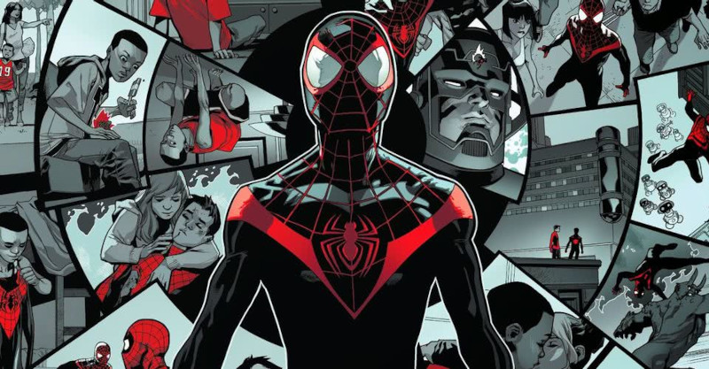
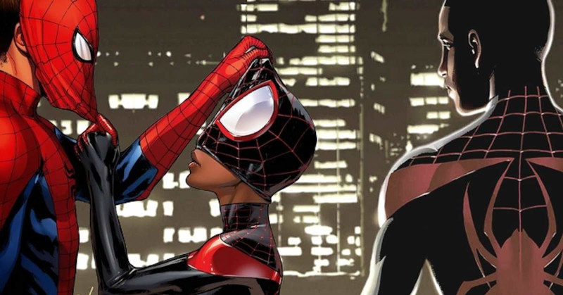
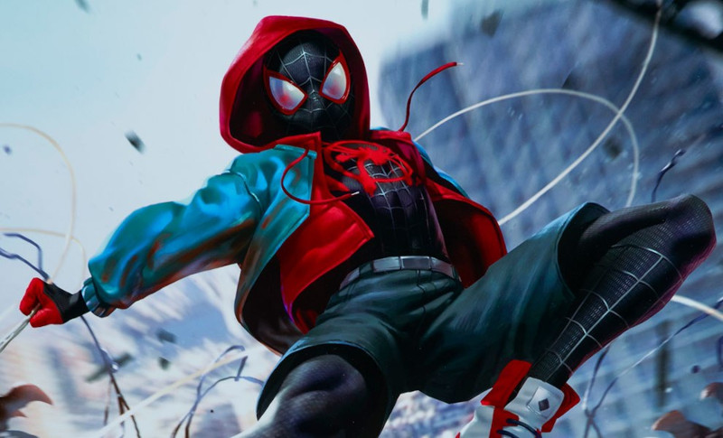

A História
Miles Morales é um personagem presente nos quadrinhos da Marvel Comics, que apareceu pela primeira vez em Ultimate Fallout #4 (Agosto de 2011). Um adolescente negro com ascendência hispânica, Miles é o segundo Homem-Aranha a aparecer em Ultimate Marvel, e com uma continuação no Universo Marvel principal.Embora Morales seja destaque na série Ultimate Comics: Spider-Man, ele não é o personagem principal na série de TV animada Ultimate Spider-Man, que estreou em abril de 2012 no Disney XD, porém mais tarde, em 2016, ele foi adicionado ao elenco principal. O personagem aparece também no filme Spider-Man: Into the Spider-Verse, de 2018, que ganhou o Oscar de melhor filme de animação.
Após Marvel encerrar a linha no final de 2015, Miles se tornou um personagem do Universo Marvel tradicional, começando com histórias sobre a marca All-New, All-Different Marvel publicada nesse mesmo ano.
A recepção ao personagem foi variada, com alguns, incluindo o criador do Homem-Aranha, Stan Lee, aprovando a criação do personagem, enquanto outros não gostaram da substituição de Peter Parker, chamando de um golpe de publicidade motivado pelo politicamente correto, algo negado. Alexandra Petri do The Washington Post afirmou que o personagem deve ser julgado pela qualidade de suas histórias, que têm recebido críticas positivas.
O personagem possui poderes semelhantes aos do Homem-Aranha original, que foram obtidos a partir da picada de uma aranha geneticamente modificada pelo inimigo do Homem-Aranha, Norman Osborn, na tentativa de duplicar essas habilidades.
Devido ao seu grande sucesso e as recentes aparições de outras versões do Homem Aranha no MCU, muito se especula sobre uma futura apresentação de Miles no universo Live Action da Marvel, tendo já sido citado em "Homem-Aranha: de volta ao lar".